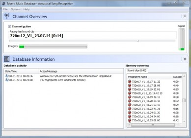

<?xml version="1.0" encoding="UTF-8"?>
<rss version="2.0"
	xmlns:content="http://purl.org/rss/1.0/modules/content/"
	xmlns:wfw="http://wellformedweb.org/CommentAPI/"
	xmlns:dc="http://purl.org/dc/elements/1.1/"
	xmlns:atom="http://www.w3.org/2005/Atom"
	xmlns:sy="http://purl.org/rss/1.0/modules/syndication/"
	xmlns:slash="http://purl.org/rss/1.0/modules/slash/"
	xmlns:itunes="http://www.itunes.com/dtds/podcast-1.0.dtd"
xmlns:rawvoice="http://www.rawvoice.com/rawvoiceRssModule/"
>

<channel>
	<title>SCOREcastOnline.com &#124; Home of the Global Professional Film, Television and Game Music Community &#187; Stephan Römer</title>
	<atom:link href="." rel="self" type="application/rss+xml" />
	<link>http://www.scorecastonline.com</link>
	<description></description>
	<lastBuildDate>Mon, 15 Oct 2012 14:10:33 +0000</lastBuildDate>
	<language>en-US</language>
	<sy:updatePeriod>hourly</sy:updatePeriod>
	<sy:updateFrequency>1</sy:updateFrequency>
	<generator>http://wordpress.org/?v=</generator>
<!-- podcast_generator="Blubrry PowerPress/4.0.4" -->
	<itunes:summary></itunes:summary>
	<itunes:author>SCOREcastOnline.com | Home of the Global Professional Film, Television and Game Music Community</itunes:author>
	<itunes:explicit>no</itunes:explicit>
	<itunes:image href="../../../wp-content/plugins/powerpress/itunes_default.jpg" />
	<itunes:subtitle></itunes:subtitle>
	<image>
		<title>SCOREcastOnline.com | Home of the Global Professional Film, Television and Game Music Community &#187; Stephan Römer</title>
		<url>../../../wp-content/uploads/powerpress/sig-SCO.jpg</url>
		<link>http://www.scorecastonline.com</link>
	</image>
		<item>
		<title>Fingerprint your cues – Tyberis Music Database</title>
		<link>../../../2012/09/19/fingerprint-your-cues-tyberis-music-database/</link>
		<comments>../../../2012/09/19/fingerprint-your-cues-tyberis-music-database/#comments</comments>
		<pubDate>Wed, 19 Sep 2012 15:00:00 +0000</pubDate>
		<dc:creator>Stephan Römer</dc:creator>
				<category><![CDATA[Latest Resources]]></category>
		<category><![CDATA[Technology]]></category>
		<category><![CDATA[Web Discoveries]]></category>
		<category><![CDATA[database]]></category>
		<category><![CDATA[fingerprinting]]></category>
		<category><![CDATA[organization]]></category>

		<guid isPermaLink="false">../../../?p=1737</guid>
		<description><![CDATA[Composer Stephan Römer in his first article in SCO has found a true gold nugget: Tyberis Music Database allows you to fingerprint your audio files and recognize them later just by playing them back. It is perfect for keeping track of cue use in a TV series or similar scoring situation.]]></description>
			<content:encoded><![CDATA[<p><strong>Music recognition for composers</strong></p>
<p>This is my first article for ScoreCast Online. I hope you enjoy!</p>
<p>Yesterday, I stumbled across a very useful tool and thought it might be useful for some of you guys.</p>
<p>A couple of words about my background and why this tool is useful for me: For quite a while now, I&#8217;m the composer of the German TV series &#8220;Die Fallers&#8221;. In the meanwhile I have over 700 cues that I composed for the series. When I receive new episodes, they are usually temped with my own music and from time to time there are themes which might be worth to be used as a basis or be developed further for a scene.  Now the problem is: how to find that single track in an archive with over 900 tracks? Of course I could call up the editor and ask for each single track they used. But usually, they are already busy with other projects. So what could we do to make our life easier? A database? Good starting point. With tags, keywords, descriptions? Well, yes, this might work but the time to create an extensive database with all kinds of bells and whistles would be immense. And there is no guarantee that you will find what you are looking for just by searching for keywords and descriptions.</p>
<p>The solution is (drum roll): a database of audio fingerprints, or to put it differently: music recognition. Think Shazam, SoundHound, etc… but for you very own music library!</p>
<p>I had a hard time to find a tool for this task but here it is: <a title="Tyberis Music Database" href="http://music.tyberis.com/" target="_blank">http://music.tyberis.com/</a></p>
<div id="attachment_1738" class="wp-caption aligncenter" style="width: 399px"><a href="../../../?attachment_id=1738" rel="attachment wp-att-1738"></a><p class="wp-caption-text">Screenshot of Tyberis Music Database</p></div>
<p>What you basically do is, you feed the program with your own music (WAV or MP3 but only at 44,1kHz and 16Bit!) and it creates fingerprints for these tracks. Creating the database happens fairly quickly. I added all my tracks within 2 or 3 minutes. Now after having done that, you put a check on &#8220;channel active&#8221; (this will monitor the audio output, you have to set the right one in preferences) and play back the temp track in your DAW or audio player and it will recognize the played track and show the title in the database, voilà!</p>
<p>As you can read on the website, the program was actually intended for bands who want to monitor radio stations for their songs. You see, there are many possibilities!</p>
<p>The only downside of this great program is that it&#8217;s Windows only. But it can be run in Parallels, VirtualBox, VMWare Fusion or in Bootcamp.</p>
<div id="dprv_cp_v2.08" lang="en" xml:lang="en" class="notranslate" style="vertical-align:baseline; padding: 3px 3px 1px 3px; margin-top:2px; margin-bottom:2px; border-collapse:separate; line-height:16px;float:none; font-family: Tahoma, MS Sans Serif; font-size:13px;border:1px solid #bbbbbb;background:#FFFFFF none;display:table;" title="certified 13 September 2012 13:44:24 UTC by Digiprove certificate P328344" ><a href="http://www.digiprove.com/prove_compliance.aspx?id=P328344%26guid=14gaCMnwekmGaTz20xr0qg" target="_blank" rel="copyright" style="height:16px; line-height: 16px; border:0px; padding:0px; margin:0px; float:none; display:inline; text-decoration: none; background:transparent none; line-height:normal; font-family: Tahoma, MS Sans Serif; font-style:normal; font-weight:normal; font-size:11px;"><span style="font-family: Tahoma, MS Sans Serif; font-style:normal; font-size:11px; font-weight:normal; color:#636363; border:0px; float:none; display:inline; text-decoration:none; letter-spacing:normal; padding:0px; padding-left:8px; vertical-align:1px;margin-bottom:2px" onmouseover="this.style.color='#A35353';" onmouseout="this.style.color='#636363';">Copyright&nbsp;secured&nbsp;by&nbsp;Digiprove&nbsp;&copy;&nbsp;2012</span></a><a title='Click to see details of license' href="javascript:dprv_DisplayLicense('1737')" style="font-family: Tahoma, MS Sans Serif; font-style:normal; display:block; font-size:11px; font-weight:normal; color:#636363; border:0px; float:none; text-align:left; text-decoration:none; letter-spacing:normal; line-height:16px; vertical-align:1px; padding:0px; padding-left:24px;margin-bottom:2px;" onmouseover="this.style.color='#A35353';" onmouseout="this.style.color='#636363';" target="_self"></a><!--72C8AA1B8CB204E83AB6C065BA0370A938072245C20AFAFC14FD3FAB2F61C342--></div><div id="license_panel1737" style="position: absolute; display:none ; font-family: Tahoma, MS Sans Serif; font-style:normal; font-size:11px; font-weight:normal; color:#636363;border:1px solid #bbbbbb; float:none; max-width:640px; text-decoration:none; letter-spacing:normal; line-height:16px; vertical-align:1px; padding:0px;background:#FFFFFF none;"><table cellpadding="0" cellspacing="0" border="0" style="line-height:17px;margin:0px;padding:0px;background-color:transparent;font-family: Tahoma, MS Sans Serif; font-style:normal; font-weight:normal; font-size:11px; color:#636363"><tbody><tr><td colspan="2" style="background-color:transparent;border:0px;font-weight:bold;padding:0px;padding-left:6px; text-align:left">Original content here is published under these license terms:</td><td style="width:20px;background-color:transparent;border:0px;padding:0px"><span style="float:right; background-color:black; color:white; width:20px; text-align:center; cursor:pointer" onclick="dprv_HideLicense('1737')">&nbsp;X&nbsp;</span></td></tr><tr><td colspan="3" style="height:4px;padding:0px;background-color:transparent;border:0px"></td></tr><tr><td style="width:130px;background-color:transparent;padding:0px;padding-left:4px;border:0px; text-align:left">License Type:</td><td style="width:300px;background-color:transparent;border:0px;padding:0px; text-align:left">1</td><td style="border:0px; background-color:transparent"></td></tr><tr><td colspan="3" style="height:4px;background-color:transparent;padding:0px;border:0px"></td></tr><tr><td style="background-color:transparent;padding:0px;padding-left:4px;border:0px; vertical-align:top; text-align:left">License Summary:</td><td colspan="2" style="background-color:transparent;border:0px;padding:0px; vertical-align:top; text-align:left"></td></tr></tbody></table></div>]]></content:encoded>
			<wfw:commentRss>../../../2012/09/19/fingerprint-your-cues-tyberis-music-database/feed/</wfw:commentRss>
		<slash:comments>1</slash:comments>
		</item>
	</channel>
</rss>
